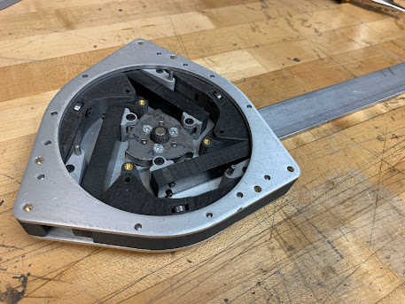
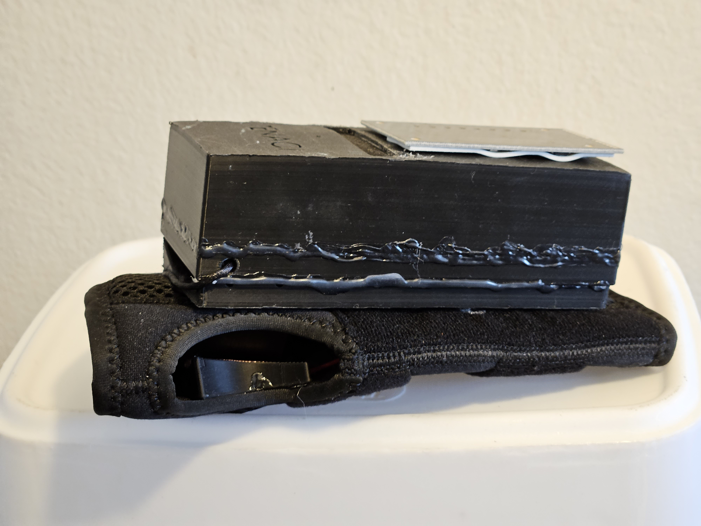
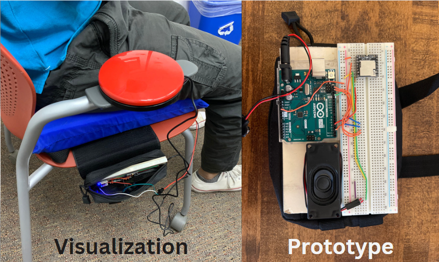

This project introduces a variable stiffness actuator with multiple cam mechanisms designed for assisting individuals with limited ankle function during walking. It emphasizes benefits over traditional actuators in mobility aid.

This study presents a novel actuator incorporating a 90 KV BLDC motor driving a gearbox with a 9:1 overall reduction ratio, featuring components like a 3:1 belt reduction and 3:1 planetary gearbox. It offers significant force generation capabilities and precise force control without external balancing forces.

The 19-DOF Humanoid Robot serves as both a functional tool for human interaction and a platform for studying bipedal locomotion and robotics. Created using 3D printing technology, it was developed within the Product Innovation Lab.

This system optimizes marine aquaculture operations with a 3-stage filtration design, utilizing advanced engineering tools for design and simulation. It improves efficiency by 60% and reduces operational costs by 20%.

Developed using Matlab's app building platform, this GUI facilitates modeling and control of n-DOF robots. It enhances trajectory planning efficiency and usability for researchers.

The Kharcha app is an intuitive tool for managing shared expenses within groups. It simplifies expense tracking and ensures equitable distribution of expenses among participants.

This project involves developing an assistive technology device for patients with chronic hand muscle weakness, featuring an innovative electric stimulation pad and ergonomic design.

This project offers a solution for automatic pressure relief in wheelchairs, featuring high precision pressure sensing and timer functionality. It enhances comfort and reduces the risk of pressure sores.

Featuring a 15-DOF robotic hand with high-torque servo motors, this project demonstrates realistic finger movements suitable for applications in animatronics, prosthetics, and interactive entertainment.